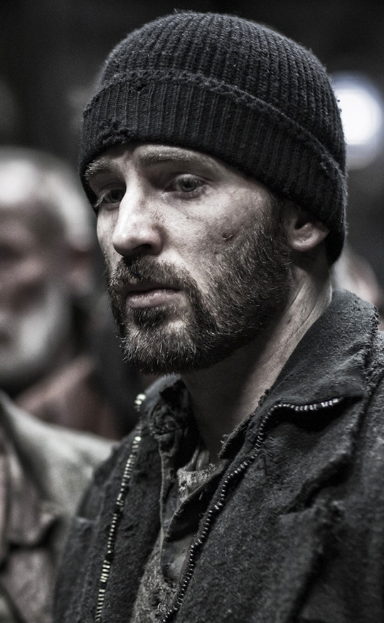
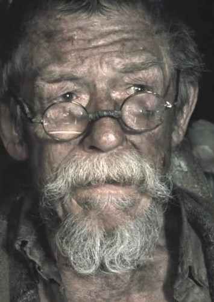

| Character | Characteristics | Why I like them |
|---|---|---|
| Curtis  |
|
I love Curtis for how he became a better man after Gilliam taught him how to be a better man, and after he turned a new leaf he would be the one to lead a revolt on the Snowpiercer |
| Gilliam  |
|
I love Gilliam since he acted like a Guiding light for the people in the caboose of the train since he would show them values like generosity and kindness by cutting his arm to feed others. |